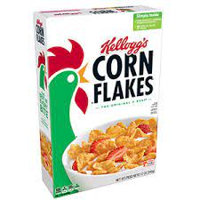
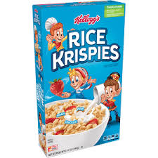
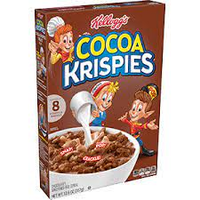
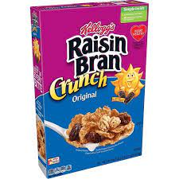
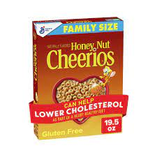

What Types of Cereal Can I Use?
You can use almost all the cereal offered in your local grocery store. However, here's a list of some of the ones that will be in the recipes of this article.
Corn Flakes
Starting of the list is Corn Flakes. Corn Flakes is a staple household cereal that can be used in many recipes. When you crush of corn flakes it has the perfect texture for breading.
Rice Krispies
Secondly, theres Rice Krispies. Rice Krispies are perfect for a ton of dessert recipes. In fact they have there are already some snack made from them, Rice Krispies Treats. However, there are still so many more desserts that can be made from them.
Chocolate Rice Krispies
Not only could you use regular Rice Krispies but you could also use Chocolate Rice Krispies. Chocolate Rice Krispies can be used in other desserts not just Rice Krispies Bars.
Raisin Bran
If you're like most people you happen to have a dislike for Raisin Bran. However, what if you I told you that you could implement it in your lunch, so you can enjoy it. You will make Raisin Bland turn into delicious Raisin Bran.
Honey Nut Cheerios
One of many children's favorite cereal is Honey Nut Cheerios. What if I told you that you can make it even better and more enjoyable. The sweetness of Honey Nut Cheerios helps you create many delicious desserts.